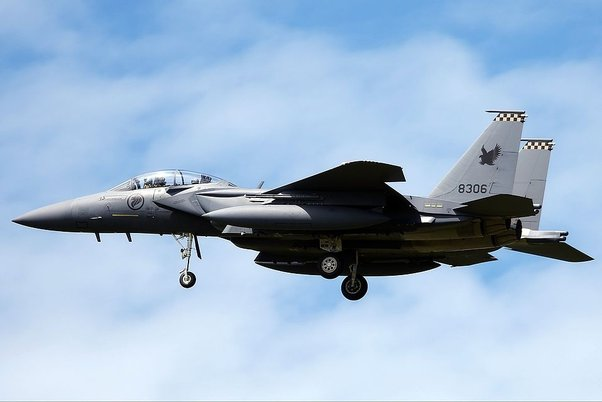
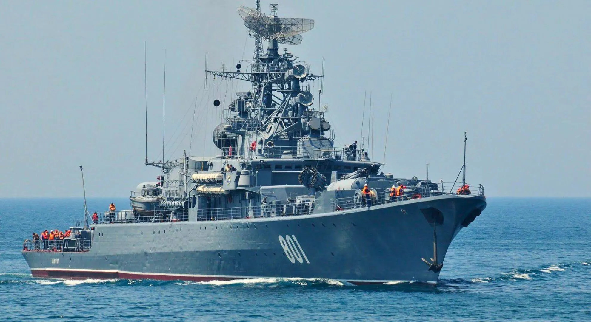

INDIAN ARMY
The Indian Army, founded 124 years ago on 1st April 1895, is the land-based branch and the
largest component of the Indian Armed Forces. The President of India serves as the Supreme
Commander of the Indian Army, which is commanded by the Chief of Army Staff, a four-star general.
The Indian Army has a rich history, originating from the East India Company and later evolving
from the British Indian Army and armies of princely states into the national army after independence.
Army Crest: The Indian Army's crest features a pair of crossed swords, a lion, and the motto "Service
Before Self."
Headquarters: The headquarters of the Indian Army is located in New Delhi, the capital of India.
Motto : "Service Before Self."
Commander-in-Chief of Army: The honorable President of India, Shri. Ram Nath Kovind.
Chief of the Army Staff : General Bipin Rawat, honored with PVSM, UYSM, AVSM, YSM, SM, VSM, ADC.
Vice Chief of the Army Staff : Lieutenant General Manoj Mukund Naravane, PVSM, AVSM, SM, VSM.
Minister of Defense: Honorable Mr. Rajnath Singh.
Strength : The Indian Army has a strength of 1.4 million personnel.
Indian Army Headquarters in India:
Headquarters, Indian Army: New Delhi
Central Command: Lucknow, Lt General Iqroop Singh Ghuman
Eastern Command : Kolkata, Lt General Anil Chauhan
Northern Command: Udhampur, Lt General Ranbir Singh
Southern Command: Pune, Lt General Satinder Kumar Saini
South Western Command: Jaipur, Lt General Alok Singh Kler
Western Command: Chandimandir, Lt General Surinder Singh
Army Training Command: Shimla, Lt General Pattacheruvanda C. Thimayya
Battles Fought By Indian Army:
First Kashmir War (1947): Conflict between India and Pakistan over the princely state of Kashmir,
resulting in the establishment of the Line of Control.
Operation Polo (1948): Annexation of the princely state of Hyderabad by India.
Korean War (1950-1953): India's involvement in the Korean War through the deployment of medical
units.
Annexation of Goa (1961): Liberation of Goa, Daman, and Diu from Portuguese rule.
Sino-Indian War (1962): Border conflict between India and China over disputed territories like
Aksai Chin and Arunachal Pradesh.
Indo-Pakistan War (1965): Conflict between India and Pakistan, primarily fought over Kashmir.
Sino-India Conflict (1967): Skirmish between Indian and Chinese troops in Sikkim.
Operation Steeplechase (1971): Counter-insurgency operation against Naxalites.
Bangladesh Liberation (1971): India's involvement in the liberation of Bangladesh from Pakistan.
Siachen Conflict (1984): Conflict over the Siachen Glacier region between India and Pakistan.
Kargil War – Operation Vijay (1999): Conflict between India and Pakistan over infiltration by
Pakistani soldiers and militants into Indian territory in Kargil.
The Indian Army has also been involved in various counter-insurgency operations within the
country, including Operation Blue Star, Operation Woodrose, and Operation Golden Bird, among others.

INDIAN AIR FORCE
Foundation:
Celebrating 87 years of valor, the Indian Air Force stands as a beacon of strength and resilience.
Established on October 8, 1932, its unwavering commitment to safeguarding our skies has made it the
fourth-largest air force globally.
Headquartered in New Delhi, under the motto "नभः स्पृशं दीप्तम्", the Indian Air Force is led by
Air Chief Marshal Rakesh Kumar Singh Bhadauria. With a strength of 1,70,000 active personnel, it
operates through various commands across India:
Central Air Command (CAC) in Allahabad, Uttar Pradesh
Eastern Air Command (EAC) in Shillong, Meghalaya
Southern Air Command (SAC) in Thiruvananthapuram, Kerala
South Western Air Command (SWAC) in Gandhinagar, Gujarat
Western Air Command (WAC) in New Delhi
Training Command (TC) in Bangalore, Karnataka
Maintenance Command (MC) in Nagpur, Maharashtra
Throughout history, the Indian Air Force has executed numerous successful operations, including:
Op Meghdoot, securing the Siachen Glacier, the highest battlefield in the world.
Op 1962, providing crucial support at staggering altitudes.
Op 1965, countering enemy attacks during the Indo-Pak war.
Op 1971, displaying valor in the face of adversity.
Op Pawan, aiding peacekeeping efforts in Sri Lanka.
Op Cactus, executing a daring parachute mission.
Op Safed Sagar, ensuring security during the Kargil conflict.
The Indian Air Force has also conducted numerous humanitarian missions:
Casualty evacuations in challenging terrains, including the Kolahai Glacier Hills and Pingdon La.
Rescues during natural disasters, such as floods in Kerala and Uttarakhand.
Operations like Op Karuna, extending aid during floods in Kerala.
Op Rahat, airlifting thousands to safety during the Uttarakhand floods of 2013.
These operations exemplify the Indian Air Force's unwavering commitment to serving the nation,
showcasing courage, and selflessness. Let us honor their sacrifice and dedication.

INDIAN NAVY
Established in 1612, the Indian Navy, known as Bharatiya Nausena, stands as a formidable maritime force.
Under the stewardship of the President of India, the Chief of Naval Staff, Admiral Karambir Singh, leads
its operations with dedication and valor.
With its headquarters at the Integrated HQ, Ministry of Defence (Navy), the Indian Navy operates through
three commands:
- Western Naval Command in Mumbai, led by Vice Admiral Ajit Kumar
- Eastern Naval Command in Visakhapatnam, under Vice Admiral Atul Kumar Jain
- Southern Naval Command in Kochi, commanded by Vice Admiral Anil Kumar Chawla
The Navy's motto, "शं नो वरुणः," embodies its commitment to peace and protection of maritime
interests.
With a strength of 67,228 personnel and 137 ships, the Indian Navy has executed numerous successful
operations, including:
- Op Raahat: Rescuing civilians during the Yemen war in 2015, showcasing the Navy's humanitarian efforts.
- Op Parakram: In 2002, junior trainees under a Navy captain participated in a standoff between India and
Pakistan, demonstrating the Navy's readiness.
- Op Trident: During the 1971 Indo-Pak war, the Indian Navy's attack on Karachi port marked a significant
victory, leading to the celebration of Navy Day on December 4th.
- Op Python: Also in 1971, the Navy successfully struck a Pakistani ship without suffering any losses.
- Op Talwar: In 1999, during the Kargil war, the Navy played a crucial role in blockading Pakistani supply
routes, showcasing its strategic importance.
- Op Cactus: In 1988, the Navy pacified unrest in Maldives and Sri Lanka, demonstrating its ability to
maintain regional stability.
These operations exemplify the Indian Navy's dedication to safeguarding the nation's maritime interests
and serving humanity in times of need. Let us salute their courage and commitment to duty.